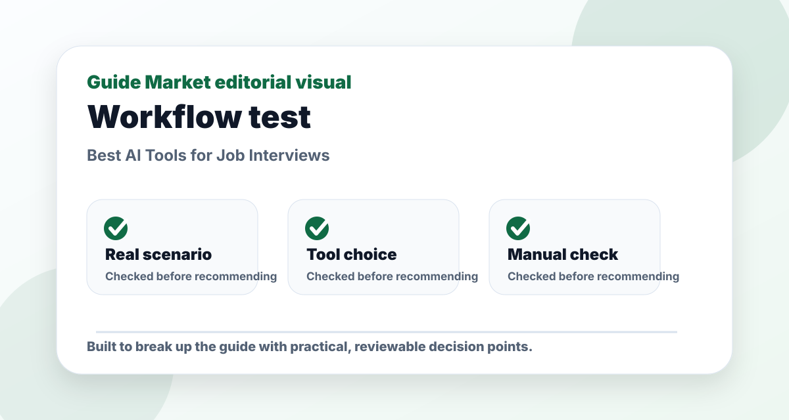
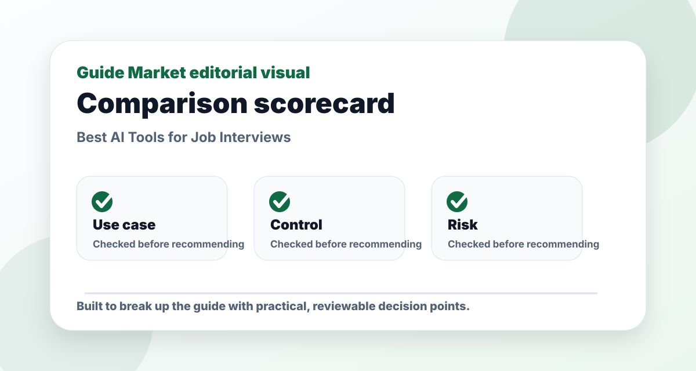

Best AI Tools for Job Interviews
Published May 12, 2026. Last updated May 24, 2026. Estimated reading time: 9 minutes.
Interview AI is useful because practice is awkward. A tool that gives you realistic questions, forces you to answer out loud, and helps you tighten stories can improve confidence quickly. The best tool depends on whether you need content, delivery, or company research.


The real problem this guide solves
This guide is not meant to be a quick list of names. The real problem is choosing job interviews tools that solve a real task instead of adding another unused subscription. That requires context: what the reader is trying to do, what can go wrong, and which option is useful after the first impressive demo.
I evaluate Final Round AI, ChatGPT, Google, Yoodli through a practical lens: how easy they are to start, how much control they give you, what must be verified manually, and whether they still make sense after the novelty fades. A recommendation only matters if it survives a realistic task.
Practical comparison criteria
| Criterion | What it reveals | How to test it |
|---|---|---|
| Use-case fit | Whether the option solves the actual job, not a generic version of it. | Test it with this scenario: a reader using job interviews tools on one realistic project and comparing the output side by side. |
| Control | Whether you can edit, verify, export, or adapt the result. | Try to change the output without starting from zero. |
| Reliability | Whether the recommendation remains useful when facts, prices, or constraints change. | Check the official source and compare with at least one alternative. |
| Long-term value | Whether the workflow will be used repeatedly. | Ask if it saves time next week, not only today. |
Pros and cons
Pros
- Gives a clearer starting point for a messy decision.
- Helps compare options using the same real-world scenario.
- Creates a repeatable workflow instead of a one-off answer.
Cons
- Still requires manual verification and judgment.
- Free plans or public information may be limited or outdated.
- Choosing too many options can create more work, not less.
Editorial verdict
My pick: ChatGPT for answer structure, Yoodli for speaking feedback, Google for company research, and Final Round AI for intensive interview prep. Do not memorize AI answers; make them sound like you.
Quick picks
- Best answer practice: ChatGPT
- Best speaking feedback: Yoodli
- Best company research: Google
- Best intensive prep: Final Round AI
Price and feature snapshot
| Tool | Price snapshot | Pros | Cons |
|---|---|---|---|
| Final Round AI Official site | Paid interview prep products; check official plans | Mock interviews and role-specific prep | Can be more than casual job seekers need |
| ChatGPT Official site | Free plan available; paid plans listed by OpenAI | STAR answers, question banks, role practice | Cannot judge real-time body language by default |
| Google Official site | Free search tools | Company news, role research, interviewer background | You must filter noisy results yourself |
| Yoodli Official site | Free and paid coaching options listed by Yoodli | Speech pacing, filler words, delivery practice | Less focused on technical answer accuracy |
The 30-minute prep routine
Pick three stories: conflict, achievement, and failure. Ask ChatGPT to turn each into a STAR answer. Record yourself in Yoodli and look for pace, filler words, and rambling. Use Google to research the company's product, recent news, and language from the job description.
What AI cannot fake
Interviewers notice when an answer is too polished and empty. Your examples need numbers, tradeoffs, mistakes, and decisions. AI can structure the story, but you need to supply the truth.
Editorial recommendation
For most people, ChatGPT plus Yoodli is enough. Final Round AI makes more sense when the interview is high-stakes, technical, or you want a more guided prep environment.
Best use cases
- Behavioral interview prep
- Mock interview for a first job
- Practicing concise answers after being too long-winded
- Researching a company before the final round
FAQs
What is the best option for beginners?
The best beginner option is usually the one that solves one clear task with the least setup. Start with a free or simple workflow before paying.
Are paid plans worth it?
Only when the paid feature removes a real limit such as exports, collaboration, higher usage, integrations, or better control.
Can these tools replace human review?
No. They can speed up drafting and comparison, but important facts, public content, schoolwork, business decisions, and financial details still need review.
How do I avoid generic results?
Use a specific brief with goal, audience, constraints, examples, and the format you want. Then ask the tool to revise against clear criteria.
Hands-on testing notes
For this topic, I would not judge Final Round AI, ChatGPT, Google, Yoodli from the homepage alone. Marketing pages are designed to make everything look easy. A fair test uses one task, one deadline, and one output format. In practice, that means giving every tool the same brief and judging the amount of useful work left after the first result.
In testing, I care less about the longest feature list and more about whether the workflow stays editable after the first draft. If setup takes longer than the task itself, the tool is probably wrong for a beginner. If the output is polished but hard to edit, it may create hidden friction. If the tool saves time but weakens quality, it is not a real productivity gain.
I would also test what happens when the first answer is not good enough. Can the tool revise? Can it explain why it made a choice? Can you export the result? Can you collaborate with someone else? These practical details matter more than a dramatic demo.
How to combine the tools
A strong workflow usually has three parts: one tool for creation, one for review, and one for organization. For example, use the fastest option to generate a draft, a more careful option to critique it, and your normal workspace to save the final version. This keeps AI useful without letting it take over the whole process.
For Best AI Tools for Job Interviews, my default stack is one primary tool for the core task, one secondary tool for review, and a simple checklist for verification. Start small, test the result, then add complexity only when the simple workflow hits a real limit.
Common mistakes
- Using a vague prompt and blaming the tool for a vague result.
- Subscribing before testing the free workflow on a real task.
- Ignoring privacy or uploading information that should stay private.
- Keeping a tool because it feels impressive, even when it does not improve the final result.
- Skipping manual review when facts, claims, or public-facing content matter.
Final recommendation
My practical recommendation is to choose the simplest tool that solves the main problem, then build a repeatable checklist around it. The reader should finish with a usable process, not just a list of apps. If the tool makes the task easier to start, easier to finish, and easier to review, it has earned its place.
My interview-prep test: can it improve one weak answer?
The best interview tools are not the ones that generate the most questions. They are the ones that help you improve one answer until it becomes clear, specific, and believable. I would test each tool with a common prompt: “Tell me about a time you handled a difficult situation.” Then I would judge whether the tool helps turn a vague story into a structured answer.
A strong answer usually needs context, action, result, and reflection. ChatGPT can help shape examples, Final Round AI can simulate pressure, and Yoodli can show speaking habits such as pace, filler words, and clarity. But none of these tools should invent experience. The candidate still needs a true story.
I also like using AI to prepare questions for the interviewer. Good questions show judgment. Instead of asking something generic, ask about team priorities, success metrics, onboarding, recent challenges, or how the role supports business goals. That makes the interview feel like a professional conversation rather than a memorized performance.
What I would not rehearse too much
I would not memorize full answers word for word. Over-rehearsed answers can sound unnatural and fragile. If the interviewer asks a slightly different question, the candidate may freeze. It is better to memorize story points, metrics, and transitions.
I would also avoid using AI to create a personality that is not yours. Confidence matters, but authenticity matters too. The goal is not to become a scripted candidate. The goal is to explain your experience clearly under pressure.
Editorial bottom line
The point of this guide is not to collect more tools. It is to leave with a decision that can be tested in real life. Before choosing, run one small project, compare the result with your current workflow, and ask whether the tool improved quality, saved time, or reduced confusion. If it did none of those things, it is not the right recommendation yet.
I would also keep a short note after testing: what worked, what failed, what needed manual checking, and whether I would use it again next week. That small habit turns a casual recommendation into a practical decision. It also protects you from keeping software only because it looked impressive during the first session.
Reader checkpoint
Before you leave the article, choose one action you can take today: test the main recommendation, compare it with one alternative, or write down why you are not ready to decide yet. A useful guide should create a next step, not just more open tabs.
A final useful habit is to record one practice answer and listen back once. Most candidates notice unclear openings, rushed endings, or missing metrics immediately. That one review can improve delivery more than generating another long list of possible questions.